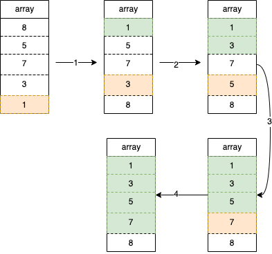

选择排序
选择排序就是遍历数组找到最小那个，然后和遍历初始位置那个数交换。如下图初始数组[8, 5, 7, 3, 1]，首先从最开始遍历找到最小数1，然后和遍历初始位置的8互换，这时候1就相当于是排好序的了，按同样的方式处理剩下的[5, 7, 3, 8]找到最小值3然后和初始值5交换，这样[1, 3]就相当于是排好序的了，按同样的方式继续处理。

代码示例：func SelectionSort(arr []int) []int {
for i := 0; i < len(arr)-1; i++ {
minIdx := i
for j := i + 1; j < len(arr); j++ {
if arr[j] < arr[minIdx] {
minIdx = j
}
}
arr[i], arr[minIdx] = arr[minIdx], arr[i]
}
return arr
}
时间复杂度：第一次内循环比较n-1次接下来一次递减最后一次是1，总次数：n-1+n-2+n-3+...+1 = (n-1+1)*(n/2) = ，时间复杂是O()
空间复杂度：由于没有使用额外空间，在数组自身上修改的原值，所以空间复杂度是O(1)